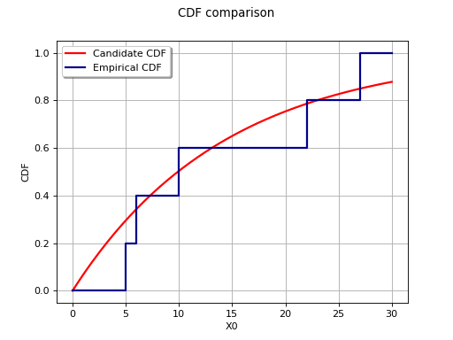

Kolmogorov-Smirnov fitting test¶
This method deals with the modelling of a probability distribution of a random vector
 .
.
It seeks to verify the compatibility between a sample of data
 and a candidate probability distribution previously chosen.
and a candidate probability distribution previously chosen.
The Kolmogorov-Smirnov Goodness-of-Fit test allows one to answer this question in
the one dimensional case  , and with a continuous distribution.
, and with a continuous distribution.
Let us limit the case to .
Thus we denote  .
This goodness-of-fit test is based on the maximum distance between the
cumulative distribution function
.
This goodness-of-fit test is based on the maximum distance between the
cumulative distribution function  of the sample
of the sample
 and that of the candidate
distribution, denoted F.
and that of the candidate
distribution, denoted F.
This distance may be expressed as follows:
![D = \sup_x \left|\widehat{F}_N\left(x\right) - F\left(x\right)\right|]()
With a sample , the distance is estimated by:
![\widehat{D}_N = \sup_{i=1 \ldots N}\left|F\left(x_i\right)-\frac{i-1}{N} ; \frac{i}{N}-F\left(x_i\right)\right|]()
Assume that the sample is drawn from the candidate distribution. By definition, the p-value of the test is the probability:

In the case where the fit is good, the value of  is
small, which leads to a p-value closer to 1.
The candidate distribution will not be rejected if and only if
is
small, which leads to a p-value closer to 1.
The candidate distribution will not be rejected if and only if
 is larger than a given threshold probability.
In general, the threshold p-value is chosen to be 0.05:
is larger than a given threshold probability.
In general, the threshold p-value is chosen to be 0.05:

Based on the p-value,
if
 , we reject the candidate distribution,
, we reject the candidate distribution,otherwise, the candidate distribution is not rejected.
Two situations may occur in practice.
the parameters of the distribution under test are known,
the parameters of the distribution under test are estimated from a sample.
If the parameters of the distribution under test are known,
algorithms are available to directly compute
the distribution of both for N large
(asymptotic distribution) or for N small (exact distribution).
This is because the distribution of does
not depend on the candidate distribution.
If the parameters of the distribution under test are estimated
from a sample, the statistic is generally smaller, because
the parameters of the distribution have been computed from the
sample.
In general, the distribution of is not known
and depends on the candidate distribution.
Therefore, sampling methods can be used in order to estimate the p-value.
The diagram below illustrates the principle of comparison with the empirical
cumulative distribution function for an ordered sample
 ; the candidate distribution considered here
is the Exponential distribution with parameters
; the candidate distribution considered here
is the Exponential distribution with parameters  ,
,
 .
.
(Source code, png)
{kind=link}

The test deals with the maximum deviation between the empirical distribution and the candidate distribution, it is by nature highly sensitive to presence of local deviations (a candidate distribution may be rejected even if it correctly describes the sample for almost the whole domain of variation).
There is no rule to determine the minimum sample size one
needs to use this test; but it is often considered a reasonable approximation
when N is of an order of a few dozen. But whatever the value of N, the
distance – and similarly the p-value – remains a useful tool for comparing
different probability distributions to a sample. The distribution which minimizes
– or maximizes the p-value – will be of interest to the analyst.
This method is also referred to in the literature as Kolmogorov’s Test.